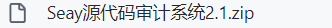
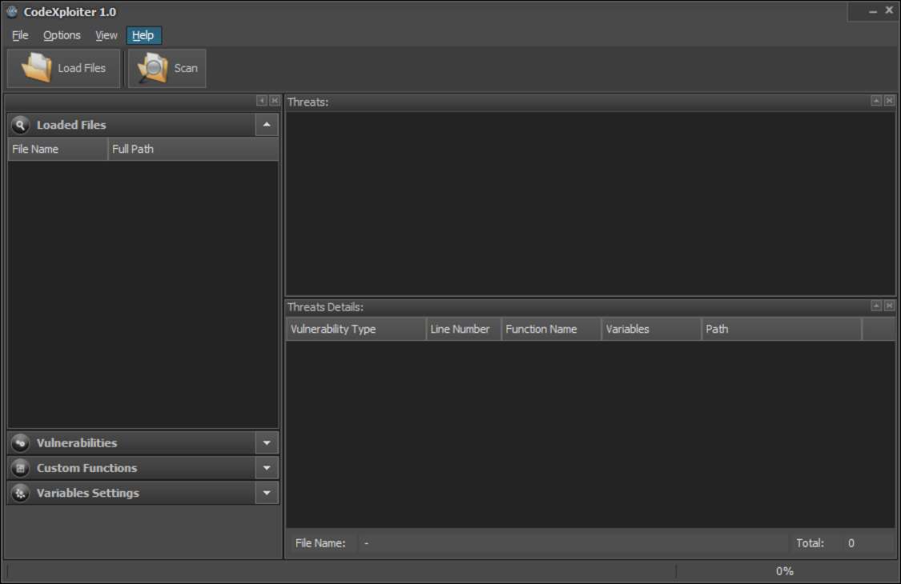

代码安全审计平台使用记录
前置准备
DVWA下载
地址，选择一个source code下载解压即可
phpStudy下载
看了很多博客，都是拿这个跑DVWA的，遂下了一个，地址
phpStudy配置
- 找到安装目录，例如我的是
D:\phpstudy_pro - 将DVWA项目解压到
D:\phpstudy_pro\WWW - 打开DVWA项目文件夹
D:\phpstudy_pro\WWW\DVWA-2.0.1\config，将config.inc.php.dist文件拷贝到随便一个目录中，删掉.dist，然后拷贝回来。如下
- 修改
config.inc.php文件内部的配置，底下两个key可以照抄这个，也可以参考DVWA reCAPTCHA key: Missing解决方法自行配置。
$_DVWA[ 'db_server' ] = '127.0.0.1:3307'; $_DVWA[ 'db_user' ] = 'root'; $_DVWA[ 'db_password' ] = 'root'; $_DVWA[ 'db_port '] = '3307'; # ReCAPTCHA settings # Used for the 'Insecure CAPTCHA' module # You'll need to generate your own keys at: https://www.google.com/recaptcha/admin $_DVWA[ 'recaptcha_public_key' ] = '6LdJJlUUAAAAAH1Q6cTpZRQ2Ah8VpyzhnffD0mBb'; $_DVWA[ 'recaptcha_private_key' ] = '6LdJJlUUAAAAAM2a3HrgzLczqdYp4g05EqDs-W4K';- 找到类似的目录
D:\phpstudy_pro\Extensions\php\php7.3.4nts里的php.ini，修改设置
allow_url_include=On allow_url_fopen=OnphpStudy使用
- 打开phpStudy
- 启动下图中的两个套件
- 浏览器输入
http://127.0.0.1/{你的DVWA解压之后的文件夹名称}，例如我需要输入http://127.0.0.1/DVWA-2.0.1，最后可以看到页面如下
- Windows环境中，如果phpStudy无法启动mysql，管理员模式打开命令行输入，同时将phpStudy中mysql的启动端口改为3307
sc delete mysql //需要使用本地mysql时运行下列命令 mysqld -install- 点击按钮 Creat / Reset Database 完成创建，点击最后一条login，账号为admin密码为password
使用seay审计DVWA源代码
seay配置
seay下载
直接下载，解压之后是exe，安装即可
seay界面

seay审计DVWA源代码
- 使用seay创建审计项目
- 选择之前解压的DVWA文件夹
- 创建完成
- 使用seay的自动审计功能
- 随便点一个漏洞就可以跳转到相关代码，这里点了六号
使用RIPS审计DVWA源代码
RIPS配置
RIPS下载
RIPS部署
- 将上面下载的安装包内的目录解压到
D:\phpstudy_pro\WWW - 浏览器输入
http://127.0.0.1/{你的文件夹名称}/，例如我的是http://127.0.0.1/rips-0.55/
RIPS审计
- 输入代扫描的代码的本地目录
- 选择verbosity level（即扫描级别），选择vuln type（即扫描类型），这里全部都是默认，然后点击scan
- 提示扫描文件太多，选择继续
- 扫描结束

- 右上角可以查看各种信息
- 可以看出，RIPS的扫描结果比seay更加少一点，一个原因是seay的错误比较零碎，还有就是RIPS将一个文件中的问题集中报出。同时RIPS的速度要远快于seay。
使用CodeXploiter审计DVWA源代码
CodeXploiter配置
CodeXploiter下载
CodeXploiter部署
双击.exe安装即可
CodeXploiter审计DVWA代码
- 打开CodeXploiter

- 手动添加需要扫描的php文件，具体操作为点击
Load Files找到你的DVWA目录，进入之后全选然后open即可，这里只把DVWA目录内的php文件添加进来了
- 点击scan，可以看到结果出现在了右侧，同时指示了问题所在文件及其目录以及问题所在行数
- 找到安装目录，例如我的是
三种工具的审查结果比较
- seay的检测是最细致也是最慢的，结果非常的零碎，但是可以通过点击报告的问题直接查看对应的代码
- RIPS的速度最快，对于问题是根据文件进行整合，但是不会想seay一样直接标记问题所在代码，需要人工去看，但是提供图表，较为清楚直观
- CodeXploiter的速度居于中间，对于审计出的问题，不会像seay那样直接跳转，但是会直接指出所在位置，便于定位。
- 从使用的体验上来说，seay虽然审查速度最慢，但是体验是最好的，可以非常方便的定位问题。体验最差的是CodeXploiter，因为没法直接添加文件夹，需要手动选择单个文件进行添加，这样难免会有些遗漏。
- 从部署上来看，只有RIPS是基于Web的，可以直接部署在服务器上，只需要拷贝文件夹到部署工具相应位置开箱即用。其他两者需要先安装再使用，难免有些局限了。